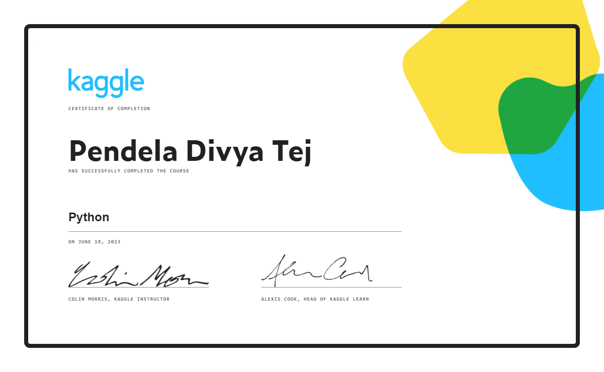

Security training
Aegis Phish Lab
A phishing awareness platform with campaign workflows, role-based access, and a documented Next.js, Go, and PostgreSQL stack.
Cyber Security · First Class Graduate
Seeking Cyber Security Analyst / SOC Analyst roles · UK
First Class BSc (Hons) Cyber Security graduate from Teesside University. I build practical projects in security operations, threat detection, phishing analysis, and network defence.

Profile
I recently graduated with First Class honours from Teesside University. My project work focuses on practical security problems, and I am currently learning Splunk and Microsoft Sentinel.
Education: BSc (Hons) Cyber Security, First Class · Teesside University · 2026
Open to entry-level Cyber Security Analyst and SOC Analyst opportunities in the UK.
Selected work
Security, software, and networking builds. Work in progress is labelled clearly.
Security training
A phishing awareness platform with campaign workflows, role-based access, and a documented Next.js, Go, and PostgreSQL stack.
Phishing analysis
An awareness simulator combining scenario-based learning with a machine-learning text classifier.
Security operations
A security event monitoring and triage project with event ingestion, detection, risk scoring, and live dashboard updates.
Network defence
A Cisco Packet Tracer branch network documenting routing, wireless LANs, NAT, and a site-to-site IPsec VPN.
Candidate-side tool · In progress
A job-search platform concept for cybersecurity applicants, covering job discovery, application tracking, CV support, and interview practice.
Personal job-search tool
A workspace for tracking applications, CV preparation, interview practice, and progress through a job search.
Technical profile
Project-based experience and current learning, grouped by area.
Professional development
Forage job simulations, Microsoft Learn achievements, and SoloLearn course certificates. Microsoft Learn achievements are presented as learning milestones, not professional certifications.
Contact
I’m seeking an entry-level Cyber Security Analyst or SOC Analyst role in the UK. For a relevant opportunity or a question about my work, please get in touch.